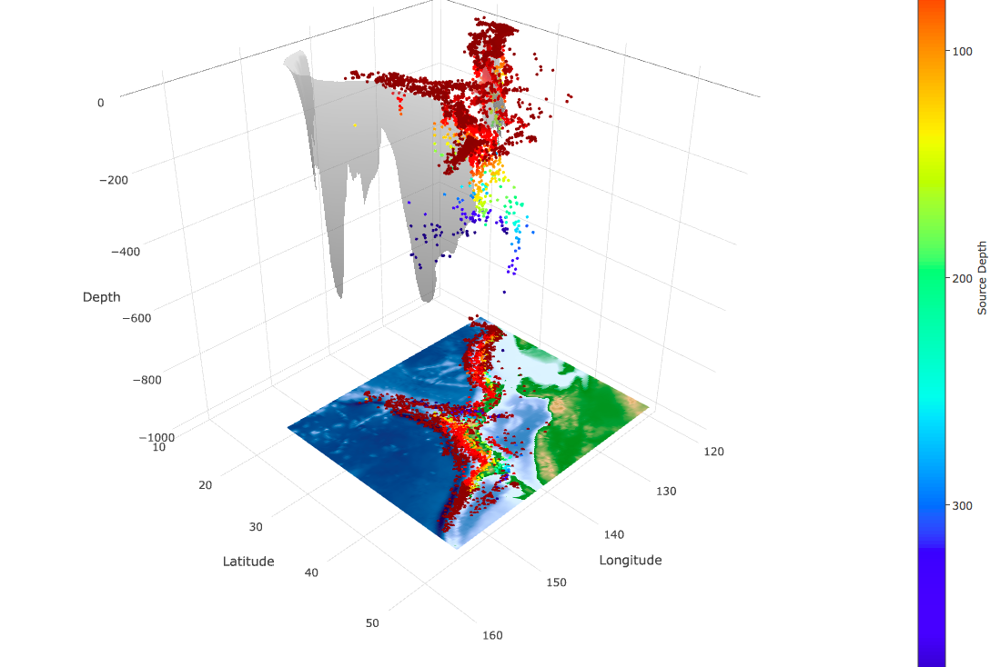

Entry 37¶
3D Earthquake Distribution in Japan¶
Ryota Kiuchi
This 3D interactive plot displays the earthquake locations determined by Japan Meteorological Agency (JMA) for the period between 2000 to 2016 (more data is available through the below link), topography, and the structure of subduction interfaces (Slab 1.0: Hayes et al., 2012) in Japan with the color of earthquake depths. The size of the earthquakes is limited larger than 2.0 due to the file size of output figure. Japan has a unique tectonic setting which is four major tectonic plates are beneath such as a small island. The subducting Pacific Plate beneath the North American Plate creates subduction zone which causes 2011 M9 Tohoku earthquake. On the other hand, Philippine Plate subducts beneath the Eurasian Plate in the southwestern part where 1944 Tonankai (M7.9) and 1946 Nankai (M8) earthquakes occurred. In this figure, we can easily see that the deep earthquakes occurred along the subduction interfaces. These earthquakes are driven by subducting oceanic plate. In addition, if we zoom in this figure, we also can notice that shallow earthquakes are clustered at some locations, not located uniformly. These clusters indicate mainshock-aftershock activities, volcanism, and long-term seismic activities which is still not well understood. Although this figure compiles the work of determining earthquake location and the structure of subduction interfaces, it enables us to better understand the relationship between the earthquake and tectonic environment as well as find possible unrecognized earthquake activities. In addition, this plot can be a great educational tool for outreach to teach about earthquake visually. In this work, we used the earthquake data from JMA seismicity catalog, topography ETOPO1 Global Relief Model from NOAA, and 3 regions of subduction interface (Izu-Bonin, Kamchatka/Kurils/Japan, and Ryukyu) of Slab 1.0 (Hayes et al. 2012). This work is mostly done by Plotly and compatible with any other region of your interest, if you have other earthquake catalogs.
The data is available from the following links: - Topography: https://www.ngdc.noaa.gov/mgg/global/global.html - Slab1.0: https://earthquake.usgs.gov/data/slab/models.php - Earthquake: http://www.data.jma.go.jp/svd/eqev/data/bulletin/eqdoc_e.html
Code and data: 1